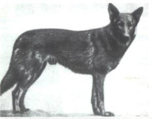
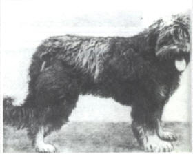

Tout d’abord, à la fin du XIXème siècle il n’existait aucune race de chien de berger définie, il n’y avait pas de standard ou de morphologie type comme aujourd’hui. Ainsi, en 1878, des éleveurs allemands réalisèrent une première sélection pour améliorer leurs chiens, créant de cette manière deux chiens de berger aux physiques très marqués : le berger de Wurtemberg, s’apparentant au bearded collie ou au berger de brie que l’on connait aujourd’hui, et le berger de Thuringe, ressemblant à un berger belge malinois ou hollandais tel qu’on en a connaissance de nos jours. Les allemands commencent donc à créer une race homogène, répondant à un standard, alors qu’en France nous travaillions plutôt par région à cette époque. l’Altdeuscher Schäferhund (Berger Allemand à poil long ancien type) pourrais descendre de Hektor Linksrhein, rebaptisé ensuite Horand von Grafath, un chien de couleur grise avec un poil mi-long. En 1914, le berger allemand fait son entrée sur le front, lors de la première guerre mondiale, avec plus de 28 000 chiens utilisés. Puis, cela se continuera par la suite, où ceux-ci seront à nouveau utilisés lors de la seconde guerre mondiale. La morphologie du berger allemand a en partie été décidée par Hitler, qui sélectionnait alors un type de berger allemand assez fin. Après la seconde guerre mondiale il ne restait presque plus de Berger Allemands, beaucoup étaient mort sur le front, car celui-ci était utilisé à tous les niveaux, par toutes les armées du monde… Dès le début de la guerre froide, en 1950, des premiers dépistages de dysplasie de la hanche ont été effectués sur certains chiens reproducteurs. Dans le même temps en 1951, la sélection physique du Berger Allemand évolue, il devient plus puissant au niveau du cou et de l’épaule. Et pendant toute la durée de cette guerre froide, l’élevage du berger allemand était très contrôlé, très fermé, car ils le voulaient comme un chien de berger. En 40 années de sélection, seuls les chiens qui répondaient aux critères les plus stricts ont été autorisés à reproduire.les normes de sélection voulaient des chiens puissants, trapus, loyaux, vifs, vigilants, courageux, sûrs d’eux et dotés d’une grande intelligence. Leur santé devait être sans failles, un dos droit les rendait moins sensibles aux problèmes de dysplasie cependant si des signes de dysplasie de la hanche et des coudes étaient détectés les chiens suspectés étaient écartés de la reproduction. Ces règles très strictes de reproduction aboutirent à la formation du berger allemand DDR. Mais en 1990, lors de la chute du mur de Berlin, tous ces chiens ont été vendus ou euthanasiés. Quelque temps après, le reste du monde a commencé à s’intéresser à ces chiens et à les importer. Et c’est ainsi que de nos jours, nous pouvons toujours trouver des Altdeutsche Schäferhund, ancêtre du berger allemand. Ils ne sont en aucun cas similaires au berger allemand à poil long, et se distinguent bien de lui par leur morphologie, leur taille, leur caractère que les éleveurs de l’Altdeutsche Schäferhund ont souhaité conserver. Car depuis la chute du mur de Berlin, le berger allemand lui a continué d’être reproduit sous d’autres critères que l’Altdeutsche, et diffère maintenant notamment de lui au niveau de son pelage ou de son ossature, son caractère étant différent lui aussi. Ce sont donc deux race bien distinctes et séparée, mais ayant un ancêtre commum

Voici le berger de Thuringe

Et maintenant celui de Wurtemberg
Vous souhaitez revenir sur la page d'acceuil ? Cliquez ici
Allez ici pour le caractère de l'Altdeutsche Schäferhund
Et ici pour le standard de l'Altdeutsche Schäferhund